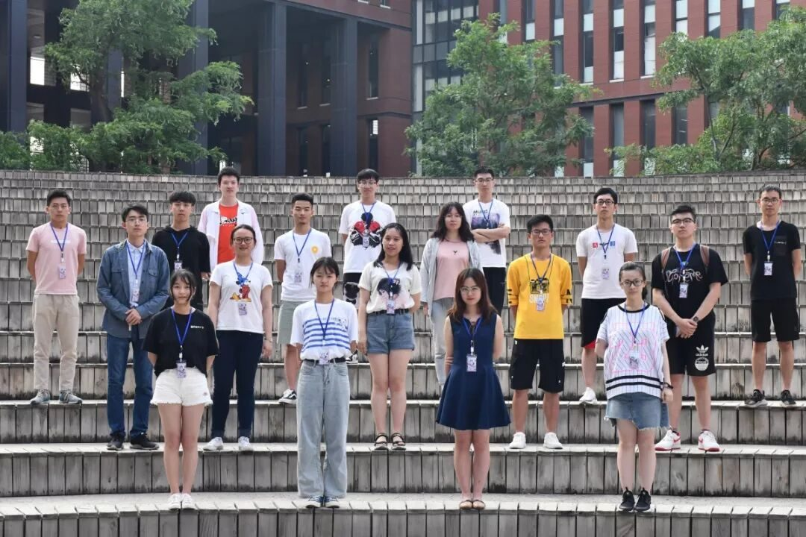
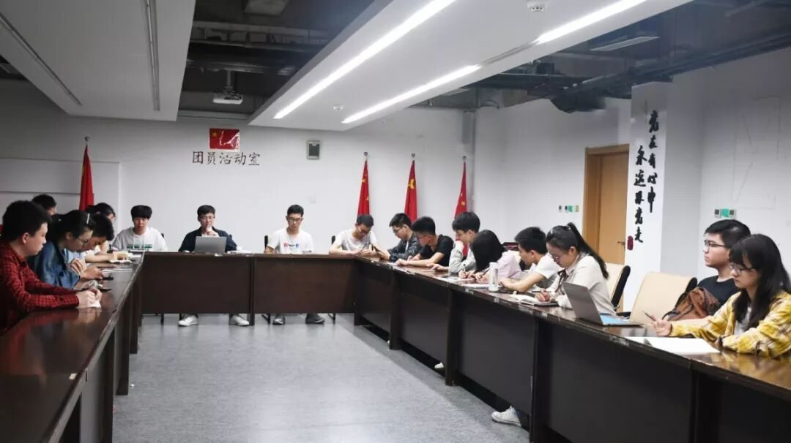
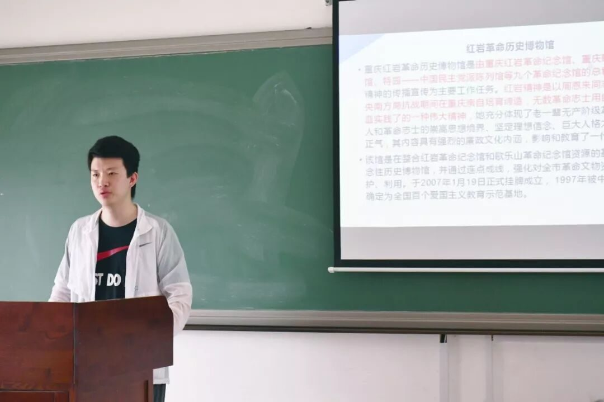
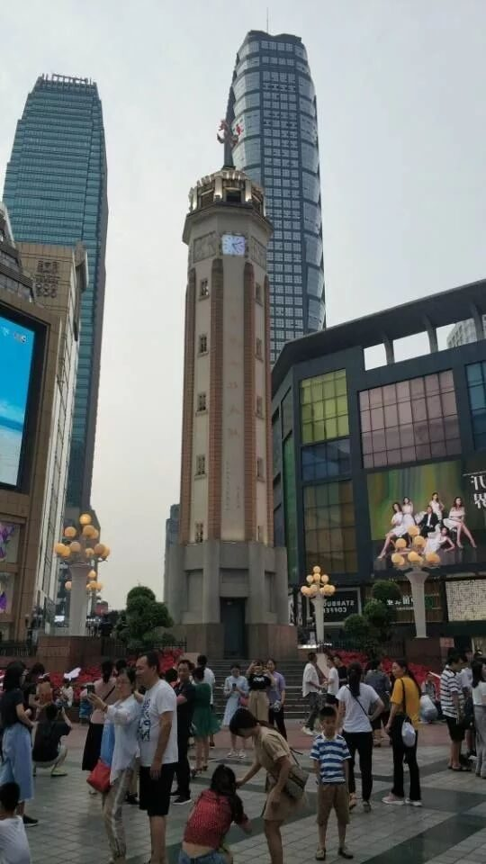
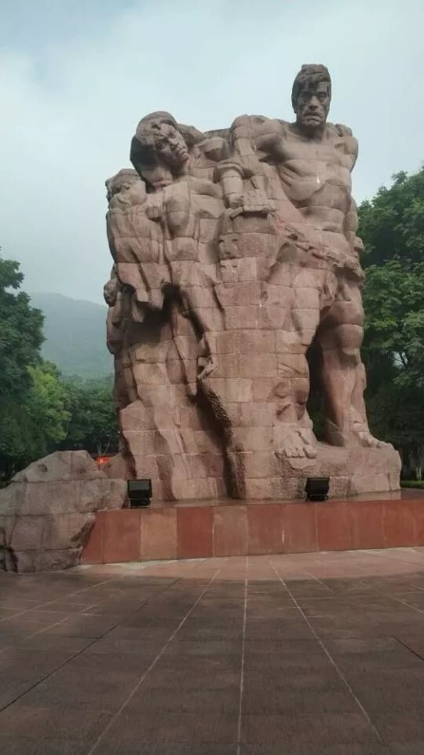
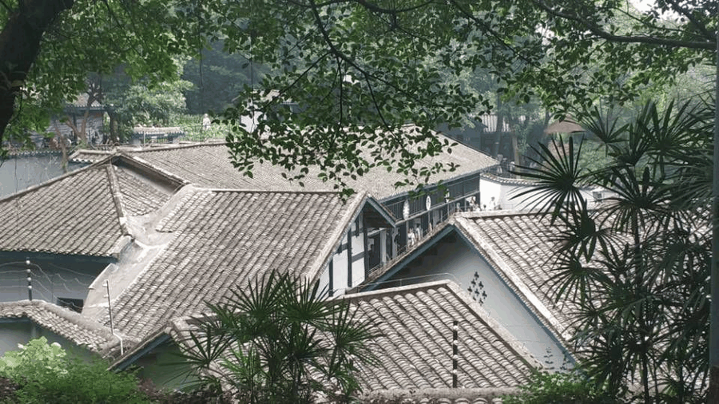
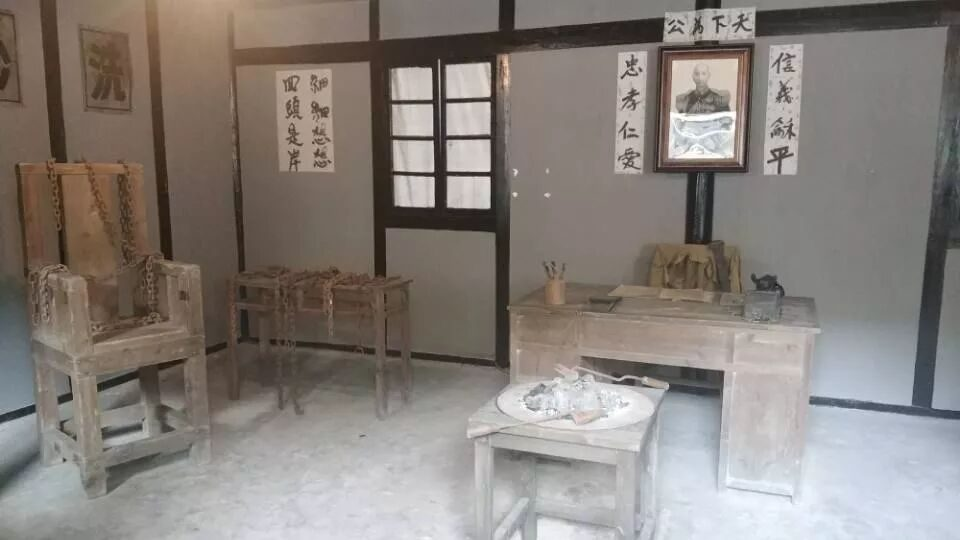
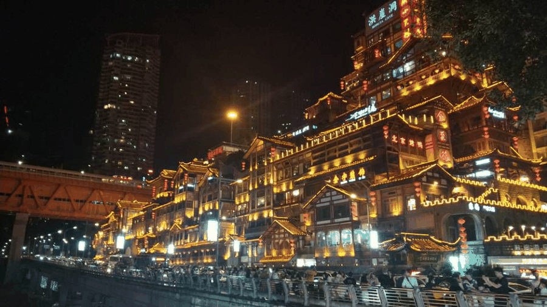

【渝传尺素•十八】重庆重庆

行者 常人杰

收到行者无疆录取邮件的那一刻起，我的心已经飞往了重庆。从开始的见面会认识各位同伴到在行者讲堂为大家分享实践地的文化底蕴，再到最后的重庆之行，我认识了更多相同梦想的小伙伴，拥有了一次难忘的重庆之行，以调研的角度深度思考重庆文化，用不一样的角度品读重庆，品读重庆的城市精神。



每到一个地方，总有一种浓郁的历史气息罩住我的全身，使我无端地感动，无端地喟叹。常常象傻瓜一样木然伫立着，一会儿满脑章句，一会儿满脑空白。一个人要学习知识，不仅要从书中寻找，也得从百态社会中总结思考，行万里路才能看透人间冷暖，明白人情世故。
重庆，经历了数千年文化传承的历史文化名城。在高山大河之间,巴文化的一脉芳华流淌在渝州大地上。在这看似平常的仁立瞬间，人、历史、自然浑滩地交融在一起了。重庆地区的生产与生活方式无不被巴渝文化打上深深的烙印, 这正是重庆之所以为重庆, 重庆人之所以为重庆人的文化根源所在。

我们走在重庆蜿蜒的路上，看巴渝民俗村之历史，览巴渝蜀绣之柔美，赏拔步床雕工之精湛，品川剧千年之古韵，一连串生动的人文之美画面令人流连忘返。这正是融入匠心精神的巴渝文化。
渝水母亲河
巴山抱怀中
勤劳巴渝民
家园美画成
恍如过山车
轻轨凌空行
闹市穿梭游
任性钻楼中
三多.阶桥洞
三少.车日灯
三美.女食景
加一温泉都
悠久并现代
十全十美城


“人生自古谁无死？”可是一个人的生命和无产阶级永葆青春的革命事业联系在一起，那是无上的光荣！
毒刑拷打是太小的考验,竹签子是竹做的,共产党员的意志是钢铁。
对勇敢的人，泪水会玷污他的名字。

共产党人的纯洁无私，一心向党的品格铸就了红岩精神，这正是革命英雄精神的核心精神所在。歌乐山烈士陵园、白公馆、渣滓洞，时隔今日，透过这里狭窄的窗户望进去，那一个个冰冷的器械静静地躺在桌子上，仿佛诉说着革命先烈曾经受过的惨烈酷刑。老虎凳，铁烙，竹签子，种种恶毒手段，无一不证明国民党反动派是为压迫人民的罪恶集团，恐怖组织。


夜幕降临的重庆街头人头攒动，但从空中望去这座城市却十分宁静，无数的小巷中，无数的门庭里，藏匿着无数厚实的灵魂。正是这些灵魂，千百年来，以积聚久远的固执，使重庆保存了重庆精神的核心。

六天的社会实践说长也长，说短也短，相逢的人会再相逢。行者无疆，我们永远在路上！
来源丨行者无疆实践团
文字丨常人杰
排版丨邓子孚
审核丨邓子孚 段智然
视频丨陈辉
行者无疆实践团
QQ：2758025831

随行者一起认识世界
长按二维码